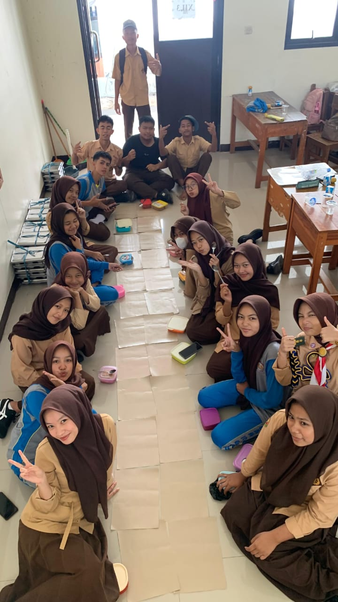

Hari Batik

Makan makan

Hari guru
Pelajar SMAN 10 Garut yang berada di kelas XII-3 yang aktif dalam kegiatan belajar dan di luar kelas. Tertarik pada bidang ilmu Matematika, Kimia, dan seni. Memiliki cita-cita menjadi apa saja.
Namaku Firsa Cantika, dan aku duduk di kelas XII-3 SMA Negeri 10 Garut. Hidupku bisa dibilang biasa saja: belajar, membantu orang tua di rumah, dan mengganggu anak kecil. Tapi, ada satu hal yang sangat aku sukai, yaitu belajar yang ada hitungannya. Suatu hari, saya diajak mengikuti Festival Sains Nasional. Saya sangat bersemangat. Latihan setiap hari kujalani dengan penuh semangat. Saya ingin memberikan penampilan terbaik.
Hari festival tiba. Aku merasakan gugup dan bersemangat karena ini pertama kalinya saya ikut lomba di SMA. Ketika memasuki ruangan, jantungku berdegup kencang. Setelah lomba selesai, banyak teman dan guru yang menghampiriku. "Firsa, gimana soalnya, susah enggak?" tanyanya. Aku tersenyum sambil bilang, "Ada yang susah, ada yang mudah," padahal susah semua.
Hari pengumuman tiba. Saya sedang makan, terus ada notifikasi "congratulations, Firsa." Terus, saya buka, ternyata saya juara, walau enggak juara 1, tapi alhamdulillah lah daripada enggak dapat sama sekali. Dari pengalaman ini, saya belajar banyak banget. Saya jadi tahu, enggak ada yang enggak mungkin di dunia ini. Kalau kita punya niat dan usaha, pasti bisa meraih apa yang kita pengin. Saya juga belajar kalau dukungan dari orang-orang tersayang itu penting banget. Tapi, kita harus menyiapkan keikhlasan apabila yang kita ingin tidak terjadi.
Kegagalan adalah hal yang biasa dalam hidup dan merupakan bagian penting dari proses menuju kesuksesan.
Tidak seorang pun siap dengan perpisahan, namun setiap ada pertemuan pasti ada perpisahan.
Beranikan dirimu untuk mencoba hal baru di SMA. Bergabunglah dengan ekskul, ikuti perlombaan, dan ciptakan kenangan indah yang tak terlupakan.
Hari Batik
Makan makan
Hari guru
klik untuk melihat masa-masa saya di SMA
Buka Halaman